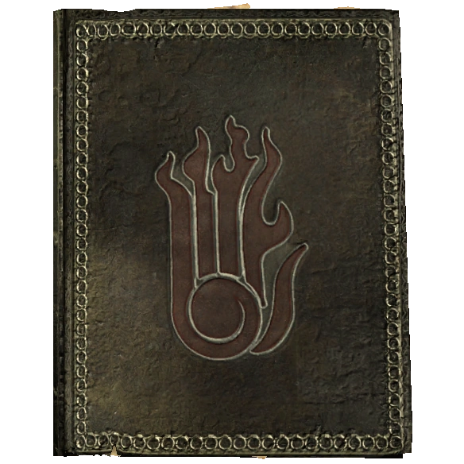
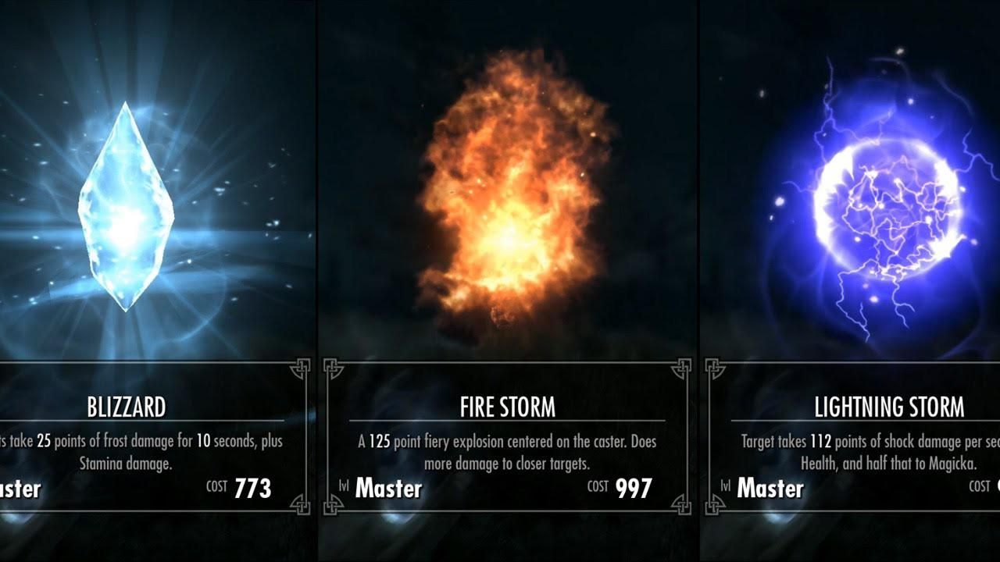
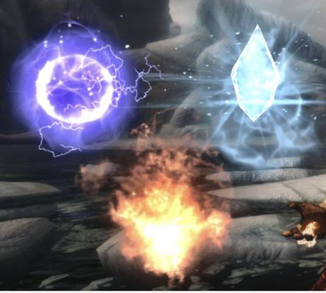

Destruição
Focada puramente em causar dano.
- Fogo: maior dano bruto e queimadura. Firebolt, Fireball e Incinerate.
- Gelo: reduz vida e Estamina e deixa o alvo lento. Ice Spike e Blizzard.
- Raio: reduz vida e Magicka instantaneamente. Lightning Bolt e Chain Lightning.

1 / 3
2 / 3
3 / 3